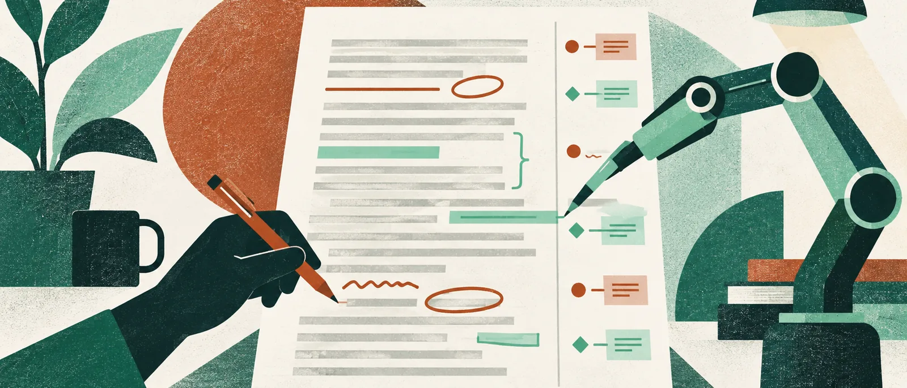

Claude가 고친 문서는 누구의 수정으로 남을까요
문서 옆에서 AI에게 “이 부분을 고쳐 주세요”라고 말할 수 있게 되면, 복사해서 옮기는 일부터 줄어듭니다. 그런데 공동 작업에서는 한 가지를 더 알아야 합니다. 그 수정이 누구의 이름으로 남고, 동료가 어디에서 검토할 수 있느냐입니다. 10월 6일 공개된 Claude의 Google Docs·Sheets·Slides 지원은 이 질문에 꽤 구체적인 답을 줍니다. Pro·Max·Team·Enterprise 유료 요금제의 공개 베타이며, 파일 옆에서 쓰는 확장 기능과 Claude 대화에서 파일을 만들고 고치는 커넥터가 함께 나왔습니다.
2025년 4월의 Google Workspace 연동은 이메일·일정·문서에서 답변에 필요한 맥락을 찾아오는 데 초점이 있었습니다. 이번 변화는 찾은 내용을 설명하는 데서 열린 작업물을 직접 바꾸는 쪽으로 사용 흐름을 넓힙니다. 기존 문서의 특정 문단을 다듬는 사람과 여러 자료로 새 보고서를 만드는 사람에게 같은 입구를 강요하지 않는 점은 실용적입니다. 전자는 사이드바, 후자는 별도 커넥터를 검토할 이유가 있습니다.
“승인”과 “제안 모드”는 다릅니다
공식 안내에 따르면 기본값인 Ask before edits에서는 변경 설명을 보고 허용할 수 있습니다. 하지만 적용된 결과는 Google의 제안 모드에 남는 수정 제안이 아닙니다. 사용자 이름의 직접 편집으로 기록됩니다. 되돌리기는 실행 취소나 버전 기록을 이용합니다. 동료에게는 바뀐 문서가 보이지만, 사용자가 Claude와 나눈 사이드바 대화까지 보이는 것은 아닙니다.
이 차이는 승인 버튼을 누르는 사람의 잘못을 찾기 위한 주의사항이 아닙니다. 예를 들어 팀의 보고서에서 “주장을 더 분명히 해 주세요”라고 요청했다면, 문장이 매끄러워졌는지와 팀이 실제로 그 주장을 할 수 있는지는 별개의 검토입니다. AI의 변경 설명을 허용한 순간을 동료의 내용 승인으로 간주해서도 안 됩니다. 팀에서 제안 모드로 합의해 온 문서라면 직접 편집을 어디까지 허용할지 먼저 정하는 편이 맞습니다.
파일 안의 정보가 모두 같은 방식으로 읽히는 것도 아닙니다. 현재 확장 기능은 댓글을 읽거나 답하거나 해결할 수 없습니다. 댓글에만 남겨 둔 “이 수치는 아직 미확정”이라는 맥락은 사용자가 별도로 전달해야 합니다. Slides에 만드는 차트도 정적 이미지라 원본 수치를 고친 뒤 자동으로 따라 바뀌지 않습니다. 문서의 문장, 검토 대화, 수치의 연결 관계를 구별해야 하는 이유입니다.
설명부터 부탁해도 됩니다
Sheets를 잘 모르는 독자에게는 수식 수정만큼 “이 합계가 어떤 셀에서 왔는지 설명해 주세요”라는 요청이 중요합니다. 공식 사용 예시에도 계산 경로 설명과 고정 입력값 확인이 포함돼 있습니다. 바로 고치기 전에 설명을 받아 보면, 자신이 확인할 수 있는 범위와 다른 담당자에게 물어야 할 범위를 나눌 수 있습니다. 사용자가 수식을 모른다는 이유로 모든 편집을 일괄 허용해야 할 필요는 없습니다.
사이드바는 열린 파일의 관련 내용과 선택한 문단·셀·슬라이드를 함께 읽습니다. 수정 대상을 말로 다시 설명할 수고가 줄어드는 이유입니다. 다만 다른 파일을 읽게 하는 연결은 별도이며, 작업 중에는 사이드바를 열어 둬야 합니다. 이 범위를 알면 “옆 문서도 당연히 봤겠지”라는 기대를 줄일 수 있습니다. 이 기능의 좋은 사용 기준은 AI에게 얼마나 많이 맡겼는가보다, 바뀐 부분을 담당자가 설명할 수 있는가에 있다고 봅니다. 선택한 부분의 편집과 변경 이유를 함께 검토하는 작은 작업부터 시작해도 충분합니다. 아직 직접 사용에 따른 정확도나 시간 절감은 확인하지 않았습니다.
원문·실험 조건과 한계
- Anthropic의 Workspace 공개 베타 발표발표 2026-10-06 · 확인 2026-10-07
- Google Workspace 확장 기능 공식 도움말게시일 미표기 · 확인 2026-10-07
- Claude Research와 Workspace 연동 발표발표 2025-04-15 · 확인 2026-10-07
- 베타의 설치 가능 여부는 Google Workspace 관리자 설정에도 달려 있습니다.
- 현재 파일 중심 확장 기능의 권한 범위를 별도 커넥터 전체에 일반화하면 안 됩니다.